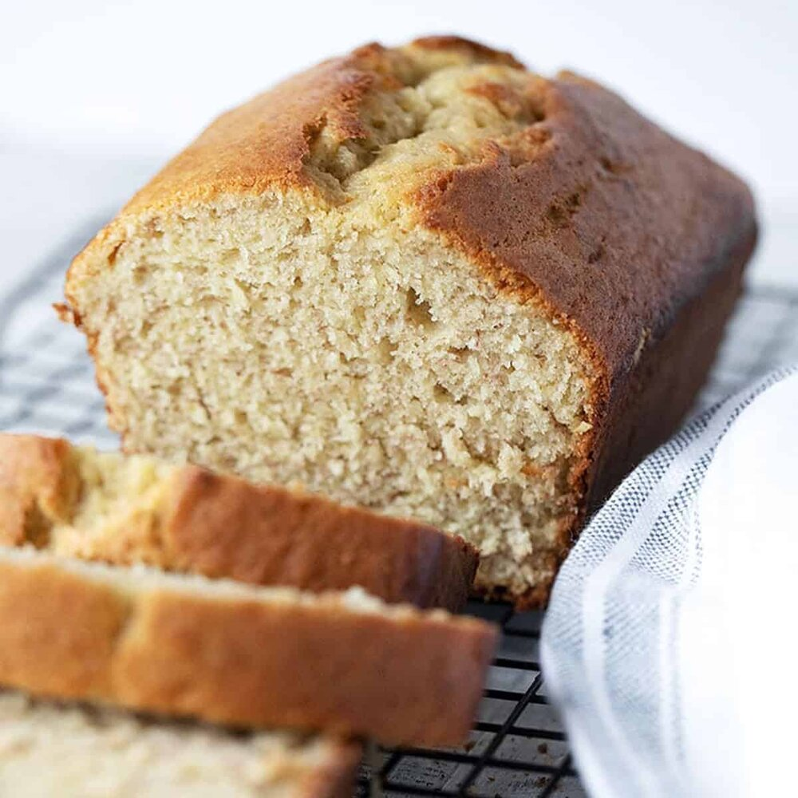

Banana Bread

Banana Bread
The beauty of this banana bread recipe is you don't need a fancy mixer! A mixing bowl, a fork to whisk the eggs, and a sturdy spoon to mix the batter are all you need. The sugar amount is flexible. The original recipe called for a cup of white sugar, but most people, including me, do just fine with 3/4 cup, and many are happy with 1/2 cup.
I was given this banana bread recipe years ago from my friend Heidi H, who, many years before, had begged the recipe from a ski buddy’s mother—Mrs. Hockmeyer. Thanks Heidi!
Ingredients
- 2 to 3 Very Ripe Bananas
- Sugar
- Baking Soda
- Butter
- All-Purpose Flour
- Salt
- Eggs
- Vanilla Extract
Steps
- Preheat oven to 350F (175C)
- In a mixing bowl, mash the ripe banans witha fork until completely smooth. Stir the melted butter into the mashed bananas.
- Mix in the baking soda and salt.
- Stir in the sugar, beaten egg, and vanilla extract.
- Mix in the flour
- Pour the batter into your prepared loaf pan and bake for 55 to 65 minutes at 350F.
- Remove from oven and allow to cool in the pan for 10 minutes.
- Remove the banana bread from the pan and let cool completely before serving.
- Enjoy!